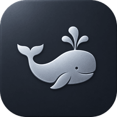

원고 작성 · 브랜드 발행 — 시안 16a ~ 16e
지금 원고 작성은 복사 → 붙여넣기 → 발행했음으로 끝나고, 브랜드는 더보기 안에 있으며, 예약은 알림만 보냅니다. 브랜드별 Threads·Instagram 연결(설정 › 소셜 연결)은 이미 있지만 원고에서 쓰이지 않습니다. 세 가지 요청 — 편하게 쓰기 · 브랜드 고르고 · 예약하거나 바로 올리기 — 을 한 흐름으로 그렸습니다. 깊이는 13a·13b·13c와 같은 depth C, 판·창·입력은 2026-10-22 "테두리 대신 음영" 기준입니다.
예시 값 · 목업
① 편하게 쓰기 — 16a가운데 원고지 한 장(글 폭 600px ≈ 35자, 본문 17/1.85)에 글만 둔다. 연결 글은 번호 블록으로 나뉘고 글자 수가 블록마다 보인다. 목차·결과물은 왼쪽 여백, 브랜드 말투·AI 후보·올릴 곳은 오른쪽 여백으로 물러난다.
② 브랜드 고르고 — 16a 머리 · 16b ①원고지 맨 위가 "어디에 올릴 글"이다. 브랜드를 고르면 AI 말투 근거와 오른쪽 "올릴 곳"(채널 연결 상태)이 함께 바뀐다. 올리기 창은 원고의 브랜드를 먼저 골라 둔 채 열린다.
③ 예약하거나 바로 올리기 — 16b · 16c · 16d채널마다 연결 상태를 보고 지금 올리기 · 예약(자동 / 알림) · 직접 올리기 중 고른다. 버튼은 대상 이름을 말한다. 올린 뒤 상태 8가지(16c)와 브랜드 쪽 한 주 일정(16d)까지.
16a 원고 책상글이 주인공 — 가운데 원고지에는 브랜드 · 제목 · 연결 글만. 연결 글을 고쳐 보세요(글자 수와 왼쪽 목차가 따라온다, 500자를 넘기면 올리기가 막힌다). 브랜드 pill을 눌러 바꿔 보고, 아래 바의 다듬기를 눌러 오른쪽에 후보를 띄워 보세요
위계 — 다섯 층
- ① 본문
- 17px / 1.85 · --fg · 화면에서 가장 넓다
- ② 제목
- 30px / 300 · 문서 제목처럼, 칸 테두리 없음
- ③ 어디에
- 브랜드 pill · 형식 탭 13px
- ④ 도구
- AI · 목차 · 말투 12px --fg-dim
- ⑤ 저장 상태
- 11.5px --fg-faint 한 줄
여백
- 원고지 안쪽
- 위 30 · 좌우 56 (왼쪽 56 안에 연결 글 번호)
- 글 폭
- 최대 600px ≈ 한글 35자 — 넓은 화면에서도 더 늘지 않는다
- 연결 글 사이
- 22 + 1px 선 + 26
- 여백 칸
- 왼쪽 168 · 오른쪽 216, 판 없이 바탕 위 (오른쪽 카드만 낮게 솟음)
편하게 저장
- 자동
- 멈추고 1.2초 뒤 저장 (지금과 같음) → ✓ 저장됨 08:42
- 버전
- AI 적용 · 예약 · 올리기 때 자동으로 남김
- 연결 글
- 줄 끝에서 Enter 두 번 = 다음 연결 글 (지금 빈 줄 규칙과 같음)
- ⌘↵
- AI 초안 (그대로)
지금과 다른 점
- 더보기 → 머리
- 브랜드가 원고지 맨 위 pill로 나온다
- 발행했음 → 올리기
- 하단 바 주 행동. 연결 안 된 채널이면 올리기 창에서 "직접 올리기"
- 여백 칸
- 지금은 <aside> 없음 예산 — 표면 예산 수정 필요(README 결정 3)
16b 올리기 — 브랜드 → 채널 → 언제하단 바 올리기가 여는 창. 브랜드를 바꾸면 채널 칸이 바뀌고, 언제를 바꾸면 주 버튼의 말이 바뀐다. 지금 올리기를 눌러 진행 단계를 보세요
올리기
1어느 브랜드
2어느 채널
3언제
미리보기
올리기 전 확인
창
- 모양
- 가운데 창 1040 × 800 · 테두리 없이 --shadow-window · 모서리 24 · 배경 흐림 6px
- 닫기
- ESC · 바깥 · 닫기 — 올리는 중엔 닫아도 진행이 계속되고 원고 하단 바에 남는다
막는 것 · 알려 주는 것
- 막음(빨강)
- 500자 넘는 연결 글 · 연결 만료 — 올라가지 않는 실패라서
- 막지 않음
- 이미지 없음 · 브랜드 미지정(담백하게) — 직접 라벨, 색 없음
- 권장 ◇
- 점선 마름모 + "권장"
버튼이 말하는 것
- 지금
- "Class.Moon Threads에 지금 올리기" — 브랜드·채널을 이름으로
- 예약
- "오늘 19:00 자동 업로드 예약" / "…알림으로 예약"
- 직접
- "복사하고 Threads 열기"
- 못 할 때
- 비활성 + 이유 한 줄
자동 업로드의 경계
- 승인
- 예약 버튼을 누르는 것이 이 내용에 대한 승인
- 고치면
- 예약 뒤 본문이 바뀌면 자동은 멈추고 "다시 승인" (16c)
- 실패
- 바로 알림 방식으로 돌아와 홈 "지금 올릴 글"에 복사 버튼과 함께
16c 올린 뒤 — 글 상태 8가지원고 하단 바 · 발행 로그 · 홈 "지금 올릴 글"이 같은 말을 쓴다. 색이 아니라 기호와 테두리 모양으로 나누고, 빨강은 실패와 놓침 두 곳뿐
16d 브랜드 › 채널과 발행브랜드 상세 맨 위 — 이 브랜드의 채널 연결, 이번 주 올린 것과 올릴 것, 올릴 준비된 글. "이 브랜드로 새 글"은 16a를 브랜드가 골라진 채 연다. 기존 "방향과 표현 기준" 패널은 그 아래로 내려간다
16e 휴대폰 390같은 원고지가 한 단으로. 입력 16px 이상, 누르는 곳 44px 이상, 올리기 창은 전체 높이 시트
9:41●●● ▮
스레드카드뉴스쇼츠
복습이 안 되는 진짜 이유
1 / 338 / 500복습이 안 되는 건 의지 문제가 아니에요. 시작점이 없어서예요.
2 / 3121 / 500수업 끝나고 한 학생이 물었어요. "복습하려고 펴면 뭐부터 봐야 할지 모르겠어요." 그날 수업 마지막 3분을 바꿨어요.
3 / 374 / 500다음 주, 그 한 줄부터 펴 보는 학생이 늘었어요.
9:41●●● ▮
올리기
1 · 어느 브랜드

Go;Re2 · 어느 채널
✓Threads @moon.classin● 연결됨 · 연결 글 3개21일
Instagram● 연결됨 · 카드뉴스 6장
YouTube Shorts○ 이 브랜드에 지정 전
3 · 언제
지금예약직접
1시간 뒤오늘 19:00내일 08:00
Threads @moon.classin · 연결 글 3개
휴대폰에서 바뀌는 것
- 여백 칸
- 없음 — 목차는 연결 글 머리 1 / 3 · 38 / 500로, 말투·AI 후보는 더보기로
- 글
- 본문 16px / 1.8(입력 16px 플로어), 좌우 20
- 하단 바
- 복사 아이콘 44 · 예약 · 올리기 — 키보드가 올라오면 바가 키보드 위로
올리기 시트
- 높이
- 전체 높이 시트 (sheet="full", 2026-09-30 기록창과 같은 그릇)
- 브랜드
- 가로로 넘기는 44px 칩
- 채널
- 한 줄 56px, 체크 칸 전체가 누르는 곳
- 주 버튼
- 52px 꽉 찬 폭, 아래 한 줄로 대상
운영자 흐름에 맞춘 것
- 폰 알림
- 알림 예약은 지금처럼 홈 "지금 올릴 글"로 — 푸시는 별도 결정
- 이동 중
- 원고는 폰에서 이어 쓰고 올리기만 해도 되게, 같은 원고지